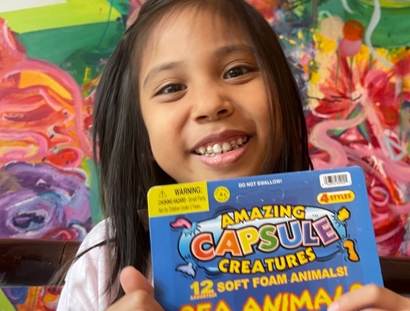

Learning with love
Early learners achieve grade-level reading fluency after completing our programs.
Academic English support and IELTS preparation for students in international and bilingual schools—including BIS, ISHCMC, AIS, Vinschool, Asian School, and more — helping them succeed in the classroom and achieve outstanding exam results.
From Phonics to IELTS Mastery.Your child's secret academic advantage.
Many students—even at top international and bilingual schools—struggle with the demands of academic English. Common challenges include:
Speaking English is not enough. Academic English—the ability to read critically, write clearly, and think analytically in English—is what determines success at school.
Book a Free AssessmentSpark is not a typical English center. We do not offer generic conversation classes. Instead, we provide a premium, structured learning experience designed to:
We build strong readers, confident writers, and independent thinkers.
Early learners achieve grade-level reading fluency after completing our programs.
Older students improve spelling, grammar, vocabulary, writing and reading confidence in just months.
Regular progress assessments keep parents informed and students motivated.
We provide a clear pathway.
Outcome: Independent reader
Outcome: Confident communicator
Outcome: Academic readiness
Outcome: IELTS 6.5–8.5+ readiness
Students learn how to read, write, and communicate with greater confidence while developing the academic English skills needed for success across subjects.
Developing Academic Readers and Writers
A structured pathway that helps students progress from foundational writing to advanced literary analysis and academic communication.
Designed to support the literacy demands of international school curricula and prepare students for future academic success.
Building Real English Confidence
A 14-level CEFR-aligned program that develops practical communication skills while building a strong foundation in English.
Language is developed through meaningful interaction, discussion, and real-world communication.
Outcome: Confident English communicators are prepared for school and everyday life.
Preparing Students for Future Opportunities
A structured pathway that develops the language skills required for high-band IELTS performance.
Unlike traditional IELTS courses, we focus on developing the literacy, vocabulary, writing, and critical thinking skills that support long-term success.
Outcome: High-band achievers and confident academic communicators.

What parents say about Spark English Center, Thao Dien, HCMC, Vietnam
“After just 6 months, my son went from guessing words to reading stories confidently.”
“Spark's phonics program gave my daughter the foundation she never got at other English centers.”
“What makes Spark the best English center in HCMC for us is its convenient location, so close to our kids' school.”
These are some of the Frequently Asked Questions
The most effective support targets academic English—reading comprehension, structured writing, and curriculum-aligned skills—rather than general conversation. Spark English specialises in helping students from both international and bilingual schools succeed in their specific school environment.
At Spark, premium means small class sizes (maximum 4 students), personalised learning plans, a structured curriculum aligned with international standards, and measurable progress. Students receive focused, expert attention that produces faster and more lasting results.
Yes. Many bilingual school students can communicate in English but lack the academic skills needed for advanced reading, structured essay writing, and grammar accuracy. Targeted support helps them perform significantly better in English-medium subjects and examinations.
Spark focuses exclusively on academic English support and IELTS preparation, not general communication classes. Our programmes are designed around the specific demands of international and bilingual school curricula, with expert teachers who understand IB, British, and Vietnamese bilingual systems.
Students progress through structured levels: from Band 4.5 to 6.5+ at the foundation and intermediate stages, and from 7.0 to 8.5+ at advanced and elite levels. One of our founders has achieved an IELTS band score of 9.0 multiple times and brings that expertise directly into our teaching methodology.
Most students show noticeable progress within 8 to 12 weeks for reading and writing skills. Significant academic improvement typically occurs within 3 to 6 months of consistent attendance.
Yes. Our Academic English Support programme is designed to help students with their actual schoolwork—completing assignments, improving essays, and understanding class materials more effectively
We welcome students from age 3 and above. Our Phonics and Literacy programme serves the youngest learners, while our Academic English and IELTS tracks support primary and secondary students through to university preparation.
Yes. Spark offers a complete IELTS program right in Thảo Điền, covering every level from foundation through to high-band mastery. Our structured approach includes academic writing, critical thinking, and proven exam strategies.
ESL (English as a Second Language) focuses on general communication skills. Academic English goes further—it develops the reading comprehension, essay writing, analytical thinking, and vocabulary needed to succeed in an English-medium school environment. Spark addresses both, depending on each student's needs.
Common signs include: slow or reluctant reading, difficulty writing sentences or paragraphs, low confidence during class discussions, and taking significantly longer than expected to complete homework. If you notice any of these, a professional assessment is recommended.
Spark English Center Vietnam is located in Thảo Điền, Ho Chi Minh City. Our centre is close to major international and bilingual schools as well as popular residential developments in the area.
Yes. Every student begins with a free, comprehensive English assessment. This provides a clear diagnosis of their current level, identifies specific areas for improvement, and results in a personalized learning plan with defined goals.
Absolutely. Our IELTS program and Academic English tracks are specifically designed to prepare students for international university admission. We help students achieve the English proficiency and academic writing skills required by universities worldwide.
Every student completes a free assessment evaluating reading, writing, and overall academic English ability. Based on the results, we place them in a class that matches their level—not just their age—so they can progress effectively.
Each lesson is structured and focused. Students work on reading comprehension, writing tasks, vocabulary development, and grammar in context. Lessons are designed to build real academic skills, not just complete activities.
Yes. Writing is a core focus at Spark. Students learn how to:
This leads to noticeable improvement in both school assignments and exams.
Yes. Students receive detailed, ongoing feedback on their writing, reading, and overall performance. This helps them understand their mistakes and improve quickly.
We combine clear progress tracking, achievable goals, and engaging lessons. Students feel motivated because they can see real improvement in their school performance.
Yes. Small class sizes create a safe, supportive environment where students feel comfortable participating, asking questions, and building confidence.
Many strong students still lack advanced academic skills, especially in writing and critical thinking. Spark helps them move from “good” to top-performing, including high IELTS bands.
We typically recommend 2–3 sessions per week for consistent progress. For IELTS or urgent improvement, a more intensive schedule may be advised.
Yes. With focused instruction and small classes, students can close gaps efficiently, especially in reading and writing. Progress depends on consistency and effort.
Yes. Homework is purposeful and reinforces lesson content. It helps students practice skills independently and accelerate their progress.
Parents receive regular updates and feedback, including insights into strengths, areas for improvement, and next steps.
Spark uses a structured, internally developed curriculum aligned with international standards and adapted to IB, Cambridge, and bilingual school requirements.
Spark focuses on expert teachers with strong academic English teaching experience, not just native speakers. The priority is teaching quality and results.
We offer flexible scheduling, including after-school and weekend classes, to fit around students' school commitments.
Students begin with a free assessment, and in many cases can experience a lesson to ensure the class is the right fit before committing.
Spark offers both small-group classes and one-to-one tutoring, depending on each student's needs.
Students develop:
These skills support long-term academic success, not just short-term improvement.